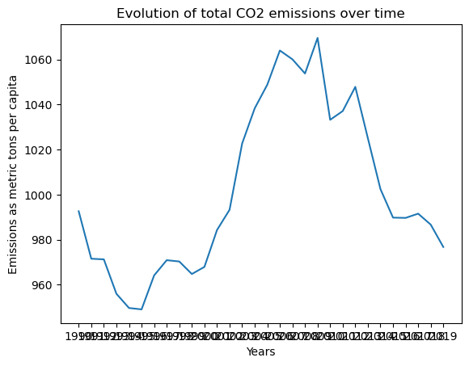
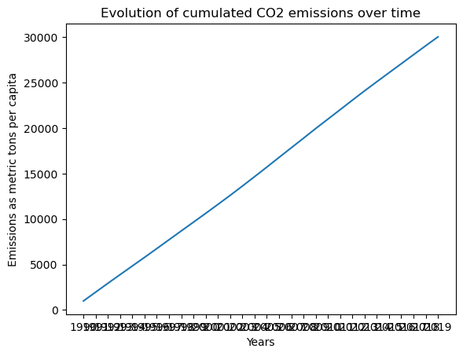

import pandas as pd
df_wide = pd.read_csv('data/API_EN.ATM.CO2E.PC_DS2_en_csv_v2_5177406.csv', skiprows=4)
!data/API_EN.ATM.CO2E.PC_DS2_en_csv_v2_5177406.csv/bin/bash: line 1: data/API_EN.ATM.CO2E.PC_DS2_en_csv_v2_5177406.csv: Permission deniedStudents (up to 3):
When working on the questions below, don’t hesitate to take some initiatives. In particular, if you don’t find how to answer a particular question (and you have asked 😉), feel free to propose a workaround.
Your work will be evaluated in the following dimensions:
In this exercise, you must use data from the WorldBank to check whether CO2 Emissions can be explained by income per capita.
Import the data from file data/API_EN.ATM.CO2E.PC_DS2_en_csv_v2_5177406.csv as a dataframe df_wide. (This table was downloaded from the worldbank website)
Hints: check the documentation from pandas.read_csv() to avoid the import error. You can check the first few lines of the file by typing in a cell: !data/API_EN.ATM.CO2E.PC_DS2_en_csv_v2_5177406.csv
Hint2: Check that all columns are well defined.
import pandas as pd
df_wide = pd.read_csv('data/API_EN.ATM.CO2E.PC_DS2_en_csv_v2_5177406.csv', skiprows=4)
!data/API_EN.ATM.CO2E.PC_DS2_en_csv_v2_5177406.csv/bin/bash: line 1: data/API_EN.ATM.CO2E.PC_DS2_en_csv_v2_5177406.csv: Permission deniedDescribe briefly the data.
The data contains information on the level of carbon dioxide (CO2) emissions per capita (in metric tons) for different countries and regions over the years 1960 to 2019. The data is sourced from the World Bank’s World Development Indicators and is reported annually.
The dataset contains 264 rows (corresponding to different countries and regions) and 61 columns (corresponding to the years 1960 to 2019 and additional columns with country and region information). The data is in a wide format, with each row representing a country/region and each column representing a year.
The data is useful for analyzing trends in CO2 emissions over time and comparing emissions across countries and regions. It can also be used for exploring the relationship between CO2 emissions and various economic and environmental factors.
df_wide.describe()| 1960 | 1961 | 1962 | 1963 | 1964 | 1965 | 1966 | 1967 | 1968 | 1969 | ... | 2013 | 2014 | 2015 | 2016 | 2017 | 2018 | 2019 | 2020 | 2021 | Unnamed: 66 | |
|---|---|---|---|---|---|---|---|---|---|---|---|---|---|---|---|---|---|---|---|---|---|
| count | 0.0 | 0.0 | 0.0 | 0.0 | 0.0 | 0.0 | 0.0 | 0.0 | 0.0 | 0.0 | ... | 239.000000 | 239.000000 | 239.000000 | 239.000000 | 239.000000 | 239.000000 | 239.000000 | 0.0 | 0.0 | 0.0 |
| mean | NaN | NaN | NaN | NaN | NaN | NaN | NaN | NaN | NaN | NaN | ... | 4.288766 | 4.194242 | 4.141210 | 4.140690 | 4.148584 | 4.128191 | 4.086604 | NaN | NaN | NaN |
| std | NaN | NaN | NaN | NaN | NaN | NaN | NaN | NaN | NaN | NaN | ... | 5.002821 | 4.862196 | 4.731198 | 4.653372 | 4.585664 | 4.489473 | 4.474616 | NaN | NaN | NaN |
| min | NaN | NaN | NaN | NaN | NaN | NaN | NaN | NaN | NaN | NaN | ... | 0.024987 | 0.027090 | 0.037289 | 0.029718 | 0.033815 | 0.035826 | 0.035704 | NaN | NaN | NaN |
| 25% | NaN | NaN | NaN | NaN | NaN | NaN | NaN | NaN | NaN | NaN | ... | 0.720891 | 0.785259 | 0.771880 | 0.769068 | 0.802179 | 0.797275 | 0.790333 | NaN | NaN | NaN |
| 50% | NaN | NaN | NaN | NaN | NaN | NaN | NaN | NaN | NaN | NaN | ... | 2.726281 | 2.888558 | 2.827949 | 2.760181 | 2.699348 | 2.979403 | 2.981762 | NaN | NaN | NaN |
| 75% | NaN | NaN | NaN | NaN | NaN | NaN | NaN | NaN | NaN | NaN | ... | 6.264131 | 6.028664 | 5.792812 | 5.828931 | 6.021844 | 5.950694 | 5.890683 | NaN | NaN | NaN |
| max | NaN | NaN | NaN | NaN | NaN | NaN | NaN | NaN | NaN | NaN | ... | 37.420762 | 36.875726 | 35.111798 | 33.493040 | 32.281678 | 31.235406 | 32.761775 | NaN | NaN | NaN |
8 rows × 63 columns
Convert the data into the long format using the function pandas.melt(). The columns of the new table df_long should be: ["Country Name","Country Code","Indicator Name","Indicator Code", "Date", "Emissions"]
df_long=pd.melt(df_wide,id_vars=["Country Name","Country Code","Indicator Name","Indicator Code"],var_name="Date",value_name= "Emissions")
df_long| Country Name | Country Code | Indicator Name | Indicator Code | Date | Emissions | |
|---|---|---|---|---|---|---|
| 0 | Aruba | ABW | CO2 emissions (metric tons per capita) | EN.ATM.CO2E.PC | 1960 | NaN |
| 1 | Africa Eastern and Southern | AFE | CO2 emissions (metric tons per capita) | EN.ATM.CO2E.PC | 1960 | NaN |
| 2 | Afghanistan | AFG | CO2 emissions (metric tons per capita) | EN.ATM.CO2E.PC | 1960 | NaN |
| 3 | Africa Western and Central | AFW | CO2 emissions (metric tons per capita) | EN.ATM.CO2E.PC | 1960 | NaN |
| 4 | Angola | AGO | CO2 emissions (metric tons per capita) | EN.ATM.CO2E.PC | 1960 | NaN |
| ... | ... | ... | ... | ... | ... | ... |
| 16753 | Kosovo | XKX | CO2 emissions (metric tons per capita) | EN.ATM.CO2E.PC | Unnamed: 66 | NaN |
| 16754 | Yemen, Rep. | YEM | CO2 emissions (metric tons per capita) | EN.ATM.CO2E.PC | Unnamed: 66 | NaN |
| 16755 | South Africa | ZAF | CO2 emissions (metric tons per capita) | EN.ATM.CO2E.PC | Unnamed: 66 | NaN |
| 16756 | Zambia | ZMB | CO2 emissions (metric tons per capita) | EN.ATM.CO2E.PC | Unnamed: 66 | NaN |
| 16757 | Zimbabwe | ZWE | CO2 emissions (metric tons per capita) | EN.ATM.CO2E.PC | Unnamed: 66 | NaN |
16758 rows × 6 columns
Eliminate all rows for which no emission data is available
df_long.dropna()| Country Name | Country Code | Indicator Name | Indicator Code | Date | Emissions | |
|---|---|---|---|---|---|---|
| 7981 | Africa Eastern and Southern | AFE | CO2 emissions (metric tons per capita) | EN.ATM.CO2E.PC | 1990 | 0.982136 |
| 7982 | Afghanistan | AFG | CO2 emissions (metric tons per capita) | EN.ATM.CO2E.PC | 1990 | 0.222538 |
| 7983 | Africa Western and Central | AFW | CO2 emissions (metric tons per capita) | EN.ATM.CO2E.PC | 1990 | 0.473669 |
| 7984 | Angola | AGO | CO2 emissions (metric tons per capita) | EN.ATM.CO2E.PC | 1990 | 0.554586 |
| 7985 | Albania | ALB | CO2 emissions (metric tons per capita) | EN.ATM.CO2E.PC | 1990 | 1.819542 |
| ... | ... | ... | ... | ... | ... | ... |
| 15954 | Samoa | WSM | CO2 emissions (metric tons per capita) | EN.ATM.CO2E.PC | 2019 | 1.415729 |
| 15956 | Yemen, Rep. | YEM | CO2 emissions (metric tons per capita) | EN.ATM.CO2E.PC | 2019 | 0.351859 |
| 15957 | South Africa | ZAF | CO2 emissions (metric tons per capita) | EN.ATM.CO2E.PC | 2019 | 7.568640 |
| 15958 | Zambia | ZMB | CO2 emissions (metric tons per capita) | EN.ATM.CO2E.PC | 2019 | 0.369958 |
| 15959 | Zimbabwe | ZWE | CO2 emissions (metric tons per capita) | EN.ATM.CO2E.PC | 2019 | 0.765894 |
7147 rows × 6 columns
Convert the Date column into a date format.
Hint: look for pandas.to_datetime() (This is not absolutely mandatory but makes graphs nicer)
df_long['Date'] = pd.to_datetime(df_long['Date'], format='%Y')
print(df_long['Date'].dtype)ValueError: time data 'Unnamed: 66' does not match format '%Y' (match)Plot the evolution over time of total recorded carbon emissions (ommiting dates where no information is available).
Hint: use groupby()
total_emissions=df_long[df_long['Emissions'].notnull()].groupby(df_long['Date'])['Emissions'].sum()
total_emissionsDate
1990 992.579902
1991 971.488470
1992 971.204768
1993 955.914952
1994 949.595751
1995 948.978410
1996 964.076804
1997 970.839153
1998 970.257143
1999 964.693322
2000 967.857097
2001 984.230281
2002 993.251894
2003 1022.691228
2004 1038.318099
2005 1048.812274
2006 1064.012494
2007 1060.075753
2008 1053.788436
2009 1069.598447
2010 1033.216694
2011 1037.102602
2012 1047.851826
2013 1025.015035
2014 1002.423899
2015 989.749130
2016 989.624913
2017 991.511483
2018 986.637647
2019 976.698404
Name: Emissions, dtype: float64from matplotlib import pyplot as plt
plt.plot(total_emissions)
plt.xlabel("Years")
plt.ylabel("Emissions as metric tons per capita")
plt.title("Evolution of total CO2 emissions over time")
plt.show
Plot cumulative carbon emissions
import numpy as np
plt.plot(total_emissions.cumsum())
plt.xlabel("Years")
plt.ylabel("Emissions as metric tons per capita")
plt.title("Evolution of cumulated CO2 emissions over time")
plt.show
Propose some plots to visualize the contribution of the main contributors to yearly carbon emissions and to cumulative carbon emissions. You can get inspiration from ourworldindata.
We could use a pie Chart of Global Emissions by Top 10 Emitters. This plot would show us the percentage of global carbon emissions of the top 10 emitters, with each country’s contribution shown as a colored segment of a pie chart in order to provide the relative contributions of each country to global emissions. We could also use an area chart of cumulative emissions by top emitters: This plot shows the cumulative carbon emissions over time for the top emitters, with each country’s contribution shown as a colored area of a stacked area chart. This plot allows for easy comparison of the contributions of different countries to cumulative emissions.
We are now interested in the relation between carbon emission and economic development. To this purpose, we would like to run a simple regression
\[\frac{ \text{emissions}_{i t} }{ \text{population}_{i t} } = \alpha + \beta*\frac{ \text{gdp}_{i t}}{\text{population}_{i t}} + \text{other factors}_{i t}\]
where \(i\) is the country index and \(t\) the time index. In a first step we will simply assume that the total effect of all other factors is normally distributed.
We would then like to consider variants of this regression in order to test the environment Kuznets curve hypothesis.
Briefly summarize the environmental Kuznets curve hypothesis
(hint: perform a small websearch. Try to identify your sources)
The Environmental Kuznets Curve hypothesis postulates an inverted-U-shaped relationship between different pollutants and per capita income, i.e., environmental pressure increases up to a certain level as income goes up; after that, it decreases. The environmental pollution increases at the beginning of economic growth. However, when it passes a certain level of income, the economic growth allows environmental remediation. from Environmental Kuznets Curve: The Evidence from BSEC Countries* - / EGE ACADEMIC REVIEW and “Environmental Kuznets Curve Hypothesis: A Survey” from Ecological Economics
Prepare the data
From the world bank website, download data for historical real gdp and population.
Perform the same steps as in the first part for both series then merge the resulting long databases “on” the Country Code and Date columns.
You should obtain one single database data containing the columns ["Country Name","Country Code","Indicator Name","Indicator Code","Date", "Emissions", "GDP", "Population"]
df_gdp = pd.read_csv('data/API_NY.GDP.MKTP.CD_DS2_en_csv_v2_5358352.csv', skiprows=4)
df_gdp.describe()| 1960 | 1961 | 1962 | 1963 | 1964 | 1965 | 1966 | 1967 | 1968 | 1969 | ... | 2013 | 2014 | 2015 | 2016 | 2017 | 2018 | 2019 | 2020 | 2021 | Unnamed: 66 | |
|---|---|---|---|---|---|---|---|---|---|---|---|---|---|---|---|---|---|---|---|---|---|
| count | 1.340000e+02 | 1.360000e+02 | 1.380000e+02 | 1.380000e+02 | 1.380000e+02 | 1.490000e+02 | 1.520000e+02 | 1.550000e+02 | 1.600000e+02 | 1.600000e+02 | ... | 2.590000e+02 | 2.600000e+02 | 2.580000e+02 | 2.570000e+02 | 2.570000e+02 | 2.570000e+02 | 2.550000e+02 | 2.520000e+02 | 2.450000e+02 | 0.0 |
| mean | 7.103309e+10 | 7.186603e+10 | 7.549842e+10 | 8.144478e+10 | 8.941392e+10 | 9.084572e+10 | 1.010890e+11 | 1.048751e+11 | 1.100032e+11 | 1.216457e+11 | ... | 2.477220e+12 | 2.538873e+12 | 2.400201e+12 | 2.444669e+12 | 2.619922e+12 | 2.783541e+12 | 2.845284e+12 | 2.790295e+12 | 3.276616e+12 | NaN |
| std | 2.132401e+11 | 2.208573e+11 | 2.354226e+11 | 2.532708e+11 | 2.769939e+11 | 2.909741e+11 | 3.185999e+11 | 3.369853e+11 | 3.589008e+11 | 3.950250e+11 | ... | 8.385432e+12 | 8.597524e+12 | 8.158733e+12 | 8.314435e+12 | 8.847933e+12 | 9.417930e+12 | 9.586893e+12 | 9.387492e+12 | 1.079655e+13 | NaN |
| min | 1.201201e+07 | 1.159201e+07 | 9.122751e+06 | 1.084010e+07 | 1.271247e+07 | 1.359393e+07 | 1.446908e+07 | 1.583518e+07 | 1.460000e+07 | 1.585000e+07 | ... | 3.861749e+07 | 3.875969e+07 | 3.681166e+07 | 4.162950e+07 | 4.521766e+07 | 4.781829e+07 | 5.422315e+07 | 5.505471e+07 | 6.310096e+07 | NaN |
| 25% | 5.151683e+08 | 5.215510e+08 | 5.354690e+08 | 5.336845e+08 | 5.526379e+08 | 5.929812e+08 | 6.427026e+08 | 6.264909e+08 | 6.454036e+08 | 6.912229e+08 | ... | 8.488220e+09 | 9.029027e+09 | 8.589120e+09 | 8.595956e+09 | 9.252834e+09 | 9.880676e+09 | 1.088080e+10 | 1.016305e+10 | 1.226939e+10 | NaN |
| 50% | 2.976974e+09 | 2.966849e+09 | 3.050700e+09 | 3.570681e+09 | 3.432183e+09 | 3.120871e+09 | 3.549759e+09 | 3.384063e+09 | 4.064739e+09 | 4.759106e+09 | ... | 5.094967e+10 | 5.339963e+10 | 4.966795e+10 | 4.984049e+10 | 5.472660e+10 | 5.700369e+10 | 6.113687e+10 | 5.715932e+10 | 6.740429e+10 | NaN |
| 75% | 2.976519e+10 | 2.822553e+10 | 2.788859e+10 | 3.229580e+10 | 2.974366e+10 | 2.834471e+10 | 2.947510e+10 | 3.076382e+10 | 3.420277e+10 | 3.741948e+10 | ... | 5.373933e+11 | 5.478617e+11 | 5.020845e+11 | 5.156547e+11 | 5.492678e+11 | 5.554554e+11 | 5.700678e+11 | 6.254289e+11 | 8.190352e+11 | NaN |
| max | 1.392273e+12 | 1.448622e+12 | 1.550544e+12 | 1.671610e+12 | 1.830287e+12 | 1.993900e+12 | 2.163894e+12 | 2.302529e+12 | 2.485213e+12 | 2.741172e+12 | ... | 7.760623e+13 | 7.973264e+13 | 7.518636e+13 | 7.646936e+13 | 8.140950e+13 | 8.646696e+13 | 8.765425e+13 | 8.511634e+13 | 9.652743e+13 | NaN |
8 rows × 63 columns
df_pop=pd.read_csv('data/API_SP.POP.TOTL_DS2_en_csv_v2_5358404.csv', skiprows=4)
df_pop.describe()| 1960 | 1961 | 1962 | 1963 | 1964 | 1965 | 1966 | 1967 | 1968 | 1969 | ... | 2013 | 2014 | 2015 | 2016 | 2017 | 2018 | 2019 | 2020 | 2021 | Unnamed: 66 | |
|---|---|---|---|---|---|---|---|---|---|---|---|---|---|---|---|---|---|---|---|---|---|
| count | 2.640000e+02 | 2.640000e+02 | 2.640000e+02 | 2.640000e+02 | 2.640000e+02 | 2.640000e+02 | 2.640000e+02 | 2.640000e+02 | 2.640000e+02 | 2.640000e+02 | ... | 2.650000e+02 | 2.650000e+02 | 2.650000e+02 | 2.650000e+02 | 2.650000e+02 | 2.650000e+02 | 2.650000e+02 | 2.650000e+02 | 2.650000e+02 | 0.0 |
| mean | 1.172187e+08 | 1.188268e+08 | 1.209957e+08 | 1.236763e+08 | 1.263792e+08 | 1.291211e+08 | 1.319789e+08 | 1.348350e+08 | 1.377713e+08 | 1.408128e+08 | ... | 2.925870e+08 | 2.964856e+08 | 3.003545e+08 | 3.042155e+08 | 3.080704e+08 | 3.118393e+08 | 3.155191e+08 | 3.190983e+08 | 3.223248e+08 | NaN |
| std | 3.693371e+08 | 3.738947e+08 | 3.806132e+08 | 3.893042e+08 | 3.980380e+08 | 4.069033e+08 | 4.162308e+08 | 4.255158e+08 | 4.350875e+08 | 4.450496e+08 | ... | 9.184860e+08 | 9.299558e+08 | 9.412781e+08 | 9.525129e+08 | 9.637185e+08 | 9.745580e+08 | 9.850384e+08 | 9.950997e+08 | 1.004098e+09 | NaN |
| min | 2.646000e+03 | 2.888000e+03 | 3.171000e+03 | 3.481000e+03 | 3.811000e+03 | 4.161000e+03 | 4.531000e+03 | 4.930000e+03 | 5.354000e+03 | 5.646000e+03 | ... | 1.069400e+04 | 1.089900e+04 | 1.087700e+04 | 1.085200e+04 | 1.082800e+04 | 1.086500e+04 | 1.095600e+04 | 1.106900e+04 | 1.120400e+04 | NaN |
| 25% | 5.132212e+05 | 5.231345e+05 | 5.337595e+05 | 5.449288e+05 | 5.566630e+05 | 5.651150e+05 | 5.691470e+05 | 5.773872e+05 | 5.832700e+05 | 5.875942e+05 | ... | 1.697753e+06 | 1.743309e+06 | 1.788196e+06 | 1.777557e+06 | 1.791003e+06 | 1.797085e+06 | 1.788878e+06 | 1.790133e+06 | 1.786038e+06 | NaN |
| 50% | 3.757486e+06 | 3.887144e+06 | 4.023896e+06 | 4.139356e+06 | 4.224612e+06 | 4.277636e+06 | 4.331825e+06 | 4.385700e+06 | 4.450934e+06 | 4.530800e+06 | ... | 1.014958e+07 | 1.028212e+07 | 1.035808e+07 | 1.032545e+07 | 1.030030e+07 | 1.039533e+07 | 1.044767e+07 | 1.060623e+07 | 1.050577e+07 | NaN |
| 75% | 2.670606e+07 | 2.748694e+07 | 2.830289e+07 | 2.914708e+07 | 3.001684e+07 | 3.084892e+07 | 3.163010e+07 | 3.209247e+07 | 3.249927e+07 | 3.277149e+07 | ... | 6.023395e+07 | 6.078914e+07 | 6.073058e+07 | 6.062750e+07 | 6.053671e+07 | 6.042176e+07 | 5.987258e+07 | 6.170452e+07 | 6.358833e+07 | NaN |
| max | 3.031565e+09 | 3.072511e+09 | 3.126935e+09 | 3.193509e+09 | 3.260518e+09 | 3.328285e+09 | 3.398561e+09 | 3.468457e+09 | 3.540255e+09 | 3.614669e+09 | ... | 7.229185e+09 | 7.317509e+09 | 7.404911e+09 | 7.491934e+09 | 7.578158e+09 | 7.661776e+09 | 7.742682e+09 | 7.820982e+09 | 7.888409e+09 | NaN |
8 rows × 63 columns
df2_long=pd.melt(df_gdp,id_vars=["Country Name","Country Code","Indicator Name","Indicator Code"],var_name="Date",value_name= "GDP")
df2_long.dropna()| Country Name | Country Code | Indicator Name | Indicator Code | Date | GDP | |
|---|---|---|---|---|---|---|
| 1 | Africa Eastern and Southern | AFE | GDP (current US$) | NY.GDP.MKTP.CD | 1960 | 2.129152e+10 |
| 2 | Afghanistan | AFG | GDP (current US$) | NY.GDP.MKTP.CD | 1960 | 5.377778e+08 |
| 3 | Africa Western and Central | AFW | GDP (current US$) | NY.GDP.MKTP.CD | 1960 | 1.040414e+10 |
| 13 | Australia | AUS | GDP (current US$) | NY.GDP.MKTP.CD | 1960 | 1.860567e+10 |
| 14 | Austria | AUT | GDP (current US$) | NY.GDP.MKTP.CD | 1960 | 6.592694e+09 |
| ... | ... | ... | ... | ... | ... | ... |
| 16486 | Samoa | WSM | GDP (current US$) | NY.GDP.MKTP.CD | 2021 | 8.438424e+08 |
| 16487 | Kosovo | XKX | GDP (current US$) | NY.GDP.MKTP.CD | 2021 | 9.412034e+09 |
| 16489 | South Africa | ZAF | GDP (current US$) | NY.GDP.MKTP.CD | 2021 | 4.190150e+11 |
| 16490 | Zambia | ZMB | GDP (current US$) | NY.GDP.MKTP.CD | 2021 | 2.214763e+10 |
| 16491 | Zimbabwe | ZWE | GDP (current US$) | NY.GDP.MKTP.CD | 2021 | 2.837124e+10 |
13156 rows × 6 columns
df3_long=pd.melt(df_pop,id_vars=["Country Name","Country Code","Indicator Name","Indicator Code"],var_name="Date",value_name= "Population")
df3_long.dropna()| Country Name | Country Code | Indicator Name | Indicator Code | Date | Population | |
|---|---|---|---|---|---|---|
| 0 | Aruba | ABW | Population, total | SP.POP.TOTL | 1960 | 54608.0 |
| 1 | Africa Eastern and Southern | AFE | Population, total | SP.POP.TOTL | 1960 | 130692579.0 |
| 2 | Afghanistan | AFG | Population, total | SP.POP.TOTL | 1960 | 8622466.0 |
| 3 | Africa Western and Central | AFW | Population, total | SP.POP.TOTL | 1960 | 97256290.0 |
| 4 | Angola | AGO | Population, total | SP.POP.TOTL | 1960 | 5357195.0 |
| ... | ... | ... | ... | ... | ... | ... |
| 16487 | Kosovo | XKX | Population, total | SP.POP.TOTL | 2021 | 1786038.0 |
| 16488 | Yemen, Rep. | YEM | Population, total | SP.POP.TOTL | 2021 | 32981641.0 |
| 16489 | South Africa | ZAF | Population, total | SP.POP.TOTL | 2021 | 59392255.0 |
| 16490 | Zambia | ZMB | Population, total | SP.POP.TOTL | 2021 | 19473125.0 |
| 16491 | Zimbabwe | ZWE | Population, total | SP.POP.TOTL | 2021 | 15993524.0 |
16400 rows × 6 columns
df_kuznetz= df_long.merge(df2_long,on=["Date","Country Name","Country Code"]).merge(df3_long, on=["Date","Country Name","Country Code"])
df_kuznetz.dropna()| Country Name | Country Code | Indicator Name_x | Indicator Code_x | Date | Emissions | Indicator Name_y | Indicator Code_y | GDP | Indicator Name | Indicator Code | Population | |
|---|---|---|---|---|---|---|---|---|---|---|---|---|
| 7981 | Africa Eastern and Southern | AFE | CO2 emissions (metric tons per capita) | EN.ATM.CO2E.PC | 1990 | 0.982136 | GDP (current US$) | NY.GDP.MKTP.CD | 2.532352e+11 | Population, total | SP.POP.TOTL | 3.098907e+08 |
| 7983 | Africa Western and Central | AFW | CO2 emissions (metric tons per capita) | EN.ATM.CO2E.PC | 1990 | 0.473669 | GDP (current US$) | NY.GDP.MKTP.CD | 1.218021e+11 | Population, total | SP.POP.TOTL | 2.067390e+08 |
| 7984 | Angola | AGO | CO2 emissions (metric tons per capita) | EN.ATM.CO2E.PC | 1990 | 0.554586 | GDP (current US$) | NY.GDP.MKTP.CD | 1.122876e+10 | Population, total | SP.POP.TOTL | 1.182864e+07 |
| 7985 | Albania | ALB | CO2 emissions (metric tons per capita) | EN.ATM.CO2E.PC | 1990 | 1.819542 | GDP (current US$) | NY.GDP.MKTP.CD | 2.028554e+09 | Population, total | SP.POP.TOTL | 3.286542e+06 |
| 7986 | Andorra | AND | CO2 emissions (metric tons per capita) | EN.ATM.CO2E.PC | 1990 | 7.653680 | GDP (current US$) | NY.GDP.MKTP.CD | 1.029048e+09 | Population, total | SP.POP.TOTL | 5.356900e+04 |
| ... | ... | ... | ... | ... | ... | ... | ... | ... | ... | ... | ... | ... |
| 15953 | World | WLD | CO2 emissions (metric tons per capita) | EN.ATM.CO2E.PC | 2019 | 4.435673 | GDP (current US$) | NY.GDP.MKTP.CD | 8.765425e+13 | Population, total | SP.POP.TOTL | 7.742682e+09 |
| 15954 | Samoa | WSM | CO2 emissions (metric tons per capita) | EN.ATM.CO2E.PC | 2019 | 1.415729 | GDP (current US$) | NY.GDP.MKTP.CD | 9.129445e+08 | Population, total | SP.POP.TOTL | 2.119050e+05 |
| 15957 | South Africa | ZAF | CO2 emissions (metric tons per capita) | EN.ATM.CO2E.PC | 2019 | 7.568640 | GDP (current US$) | NY.GDP.MKTP.CD | 3.885320e+11 | Population, total | SP.POP.TOTL | 5.808706e+07 |
| 15958 | Zambia | ZMB | CO2 emissions (metric tons per capita) | EN.ATM.CO2E.PC | 2019 | 0.369958 | GDP (current US$) | NY.GDP.MKTP.CD | 2.330867e+10 | Population, total | SP.POP.TOTL | 1.838048e+07 |
| 15959 | Zimbabwe | ZWE | CO2 emissions (metric tons per capita) | EN.ATM.CO2E.PC | 2019 | 0.765894 | GDP (current US$) | NY.GDP.MKTP.CD | 2.183223e+10 | Population, total | SP.POP.TOTL | 1.535461e+07 |
6937 rows × 12 columns
Regress per capita emissions on gdp per capita and comment.
from statsmodels.formula import api as smf
df_kuznetz['GDP_per_capita']=df_kuznetz['GDP']/1000/df_kuznetz['Population']#on divise le PIB par mille car c'est en million et la population est en milliersmodel=smf.ols(" Emissions ~ GDP_per_capita ", df_kuznetz)
res=model.fit()
res.summary()| Dep. Variable: | Emissions | R-squared: | 0.334 |
| Model: | OLS | Adj. R-squared: | 0.334 |
| Method: | Least Squares | F-statistic: | 3473. |
| Date: | Mon, 03 Apr 2023 | Prob (F-statistic): | 0.00 |
| Time: | 12:41:31 | Log-Likelihood: | -19885. |
| No. Observations: | 6937 | AIC: | 3.977e+04 |
| Df Residuals: | 6935 | BIC: | 3.979e+04 |
| Df Model: | 1 | ||
| Covariance Type: | nonrobust |
| coef | std err | t | P>|t| | [0.025 | 0.975] | |
| Intercept | 2.4500 | 0.059 | 41.326 | 0.000 | 2.334 | 2.566 |
| GDP_per_capita | 0.1852 | 0.003 | 58.931 | 0.000 | 0.179 | 0.191 |
| Omnibus: | 3880.879 | Durbin-Watson: | 1.836 |
| Prob(Omnibus): | 0.000 | Jarque-Bera (JB): | 96298.037 |
| Skew: | 2.186 | Prob(JB): | 0.00 |
| Kurtosis: | 20.721 | Cond. No. | 21.9 |
The estimated regresssion is emissions per capita = 2,45+ 0,1852 gdp per capita. Both the intercept and the coefficient are significant, indicating that higher GDP per capita is associated with higher per capita emissions, holding other factors constant. The R-squared of the model is relatively low at 0.334, suggesting that other factors not included in the model may also be important in explaining per capita emissions.
Split the sample into the three quantiles, based on gdp/capita in the last period. Run the same regression in all three subsamples. Comment.
df_kuznetz['Quantile']= pd.qcut(df_kuznetz['GDP_per_capita'],q = 3, labels=['low', 'medium', 'high'])
model_low=smf.ols(" Emissions ~ GDP_per_capita ", df_kuznetz[df_kuznetz['Quantile'] == "low"])
res_low=model_low.fit()
res_low.summary()| Dep. Variable: | Emissions | R-squared: | 0.044 |
| Model: | OLS | Adj. R-squared: | 0.043 |
| Method: | Least Squares | F-statistic: | 68.42 |
| Date: | Mon, 03 Apr 2023 | Prob (F-statistic): | 2.89e-16 |
| Time: | 13:37:32 | Log-Likelihood: | -2221.9 |
| No. Observations: | 1493 | AIC: | 4448. |
| Df Residuals: | 1491 | BIC: | 4458. |
| Df Model: | 1 | ||
| Covariance Type: | nonrobust |
| coef | std err | t | P>|t| | [0.025 | 0.975] | |
| Intercept | 0.0444 | 0.073 | 0.605 | 0.545 | -0.100 | 0.189 |
| GDP_per_capita | 1.2173 | 0.147 | 8.272 | 0.000 | 0.929 | 1.506 |
| Omnibus: | 1261.416 | Durbin-Watson: | 1.783 |
| Prob(Omnibus): | 0.000 | Jarque-Bera (JB): | 26143.353 |
| Skew: | 4.011 | Prob(JB): | 0.00 |
| Kurtosis: | 21.865 | Cond. No. | 6.47 |
model_medium=smf.ols(" Emissions ~ GDP_per_capita ", df_kuznetz[df_kuznetz['Quantile'] == "medium"])
res_medium=model_medium.fit()
res_medium.summary()| Dep. Variable: | Emissions | R-squared: | 0.096 |
| Model: | OLS | Adj. R-squared: | 0.095 |
| Method: | Least Squares | F-statistic: | 274.8 |
| Date: | Mon, 03 Apr 2023 | Prob (F-statistic): | 9.77e-59 |
| Time: | 13:38:08 | Log-Likelihood: | -5698.0 |
| No. Observations: | 2600 | AIC: | 1.140e+04 |
| Df Residuals: | 2598 | BIC: | 1.141e+04 |
| Df Model: | 1 | ||
| Covariance Type: | nonrobust |
| coef | std err | t | P>|t| | [0.025 | 0.975] | |
| Intercept | 0.7320 | 0.099 | 7.418 | 0.000 | 0.539 | 0.926 |
| GDP_per_capita | 0.6774 | 0.041 | 16.576 | 0.000 | 0.597 | 0.758 |
| Omnibus: | 1316.986 | Durbin-Watson: | 1.691 |
| Prob(Omnibus): | 0.000 | Jarque-Bera (JB): | 7900.449 |
| Skew: | 2.395 | Prob(JB): | 0.00 |
| Kurtosis: | 10.071 | Cond. No. | 6.42 |
model_high=smf.ols(" Emissions ~ GDP_per_capita ", df_kuznetz[df_kuznetz['Quantile'] == "high"])
res_high=model_high.fit()
res_high.summary()| Dep. Variable: | Emissions | R-squared: | 0.131 |
| Model: | OLS | Adj. R-squared: | 0.130 |
| Method: | Least Squares | F-statistic: | 427.5 |
| Date: | Mon, 03 Apr 2023 | Prob (F-statistic): | 1.37e-88 |
| Time: | 13:38:39 | Log-Likelihood: | -8941.7 |
| No. Observations: | 2844 | AIC: | 1.789e+04 |
| Df Residuals: | 2842 | BIC: | 1.790e+04 |
| Df Model: | 1 | ||
| Covariance Type: | nonrobust |
| coef | std err | t | P>|t| | [0.025 | 0.975] | |
| Intercept | 5.7100 | 0.152 | 37.652 | 0.000 | 5.413 | 6.007 |
| GDP_per_capita | 0.1068 | 0.005 | 20.676 | 0.000 | 0.097 | 0.117 |
| Omnibus: | 1447.885 | Durbin-Watson: | 1.902 |
| Prob(Omnibus): | 0.000 | Jarque-Bera (JB): | 12763.970 |
| Skew: | 2.245 | Prob(JB): | 0.00 |
| Kurtosis: | 12.357 | Cond. No. | 42.3 |
These three linear regressions show us that the higher the GDP per capita of countries, the higher the R-squared. This means that the model is more predictive for countries with a “high” GDP, the higher their GDP per capita, the higher their per capita emissions. This partly confirms the Kuznetz curve hypothesis
Instead of splitting the sample, run a nonlinear regression:
\[\frac{ \text{emissions}_{i t} }{ \text{population}_{i t} } = \alpha + \beta_1*\frac{ \text{gdp}_{i t}}{\text{population}_{i t}} + \beta_2*\left( \frac{ \text{gdp}_{i t}}{\text{population}_{i t}} \right)^2 + \text{other factors}_{i t}\]
Justify why \(\beta_2<0\) can be interpreted as a proof of the environmental Kuznets hypothesis. Comment.
import numpy as np
nonlinear_regression=smf.ols('Emissions ~ GDP_per_capita + np.power(GDP_per_capita, 2)',df_kuznetz)
res_nl=nonlinear_regression.fit()
res_nl.summary()| Dep. Variable: | Emissions | R-squared: | 0.465 |
| Model: | OLS | Adj. R-squared: | 0.465 |
| Method: | Least Squares | F-statistic: | 3019. |
| Date: | Mon, 03 Apr 2023 | Prob (F-statistic): | 0.00 |
| Time: | 13:49:50 | Log-Likelihood: | -19121. |
| No. Observations: | 6937 | AIC: | 3.825e+04 |
| Df Residuals: | 6934 | BIC: | 3.827e+04 |
| Df Model: | 2 | ||
| Covariance Type: | nonrobust |
| coef | std err | t | P>|t| | [0.025 | 0.975] | |
| Intercept | 1.5088 | 0.058 | 26.113 | 0.000 | 1.395 | 1.622 |
| GDP_per_capita | 0.3719 | 0.005 | 69.887 | 0.000 | 0.361 | 0.382 |
| np.power(GDP_per_capita, 2) | -0.0024 | 5.76e-05 | -41.345 | 0.000 | -0.002 | -0.002 |
| Omnibus: | 4662.808 | Durbin-Watson: | 1.905 |
| Prob(Omnibus): | 0.000 | Jarque-Bera (JB): | 103561.456 |
| Skew: | 2.902 | Prob(JB): | 0.00 |
| Kurtosis: | 21.017 | Cond. No. | 1.95e+03 |
The coefficient on the quadratic term, 𝛽2, is negative, standing at -0,0024, which support the hypothesis that the relationship between emissions and GDP per capita is U-shaped and consistent with the EKH.
(Bonus) Suggest a way to improve the regression.
this result alone does not provide conclusive proof of the EKH, as the coefficient is not statistically significant and as there may be other factors that influence the relationship between emissions and GDP per capita
The scientific review Data-in-Brief, publishes raw data after a rigorous referee process.
The following entry contains booking data for two hotels in Portugal, with many informations about the clients.
Your goal is to propose a machine learning model to predict whether a given booking will be cancelled.
(note that the dataset is rather large and that some operations may take some time to complete)
Import the dataset. Describe it.
import pandas
df = pandas.read_csv("hotel_booking.csv")df.describe()| is_canceled | lead_time | arrival_date_year | arrival_date_week_number | arrival_date_day_of_month | stays_in_weekend_nights | stays_in_week_nights | adults | children | babies | is_repeated_guest | previous_cancellations | previous_bookings_not_canceled | booking_changes | agent | company | days_in_waiting_list | adr | required_car_parking_spaces | total_of_special_requests | |
|---|---|---|---|---|---|---|---|---|---|---|---|---|---|---|---|---|---|---|---|---|
| count | 119390.000000 | 119390.000000 | 119390.000000 | 119390.000000 | 119390.000000 | 119390.000000 | 119390.000000 | 119390.000000 | 119386.000000 | 119390.000000 | 119390.000000 | 119390.000000 | 119390.000000 | 119390.000000 | 103050.000000 | 6797.000000 | 119390.000000 | 119390.000000 | 119390.000000 | 119390.000000 |
| mean | 0.370416 | 104.011416 | 2016.156554 | 27.165173 | 15.798241 | 0.927599 | 2.500302 | 1.856403 | 0.103890 | 0.007949 | 0.031912 | 0.087118 | 0.137097 | 0.221124 | 86.693382 | 189.266735 | 2.321149 | 101.831122 | 0.062518 | 0.571363 |
| std | 0.482918 | 106.863097 | 0.707476 | 13.605138 | 8.780829 | 0.998613 | 1.908286 | 0.579261 | 0.398561 | 0.097436 | 0.175767 | 0.844336 | 1.497437 | 0.652306 | 110.774548 | 131.655015 | 17.594721 | 50.535790 | 0.245291 | 0.792798 |
| min | 0.000000 | 0.000000 | 2015.000000 | 1.000000 | 1.000000 | 0.000000 | 0.000000 | 0.000000 | 0.000000 | 0.000000 | 0.000000 | 0.000000 | 0.000000 | 0.000000 | 1.000000 | 6.000000 | 0.000000 | -6.380000 | 0.000000 | 0.000000 |
| 25% | 0.000000 | 18.000000 | 2016.000000 | 16.000000 | 8.000000 | 0.000000 | 1.000000 | 2.000000 | 0.000000 | 0.000000 | 0.000000 | 0.000000 | 0.000000 | 0.000000 | 9.000000 | 62.000000 | 0.000000 | 69.290000 | 0.000000 | 0.000000 |
| 50% | 0.000000 | 69.000000 | 2016.000000 | 28.000000 | 16.000000 | 1.000000 | 2.000000 | 2.000000 | 0.000000 | 0.000000 | 0.000000 | 0.000000 | 0.000000 | 0.000000 | 14.000000 | 179.000000 | 0.000000 | 94.575000 | 0.000000 | 0.000000 |
| 75% | 1.000000 | 160.000000 | 2017.000000 | 38.000000 | 23.000000 | 2.000000 | 3.000000 | 2.000000 | 0.000000 | 0.000000 | 0.000000 | 0.000000 | 0.000000 | 0.000000 | 229.000000 | 270.000000 | 0.000000 | 126.000000 | 0.000000 | 1.000000 |
| max | 1.000000 | 737.000000 | 2017.000000 | 53.000000 | 31.000000 | 19.000000 | 50.000000 | 55.000000 | 10.000000 | 10.000000 | 1.000000 | 26.000000 | 72.000000 | 21.000000 | 535.000000 | 543.000000 | 391.000000 | 5400.000000 | 8.000000 | 5.000000 |
Split the dataset between a train set and a validation set.
The validation set should not be touched until the very end.
import sklearn
import sklearn.model_selectiondf_ml, df_validation = sklearn.model_selection.train_test_split(df, test_size=0.2, random_state=56)
# until the very last question, you should use *only* the training setSplit the df_ml dataframe between a training set and a test set.
df_train, df_test = sklearn.model_selection.train_test_split(df_ml)
# the various algorithms can be trained and tested using df_train and df_testJustify why a machine learning model seems appropriate to predict cancellation. Which one(s) could you use?
Implement two or more classification models, to predict cancellation.
Compare their performance on the test set. Which one would you choose?
Using your preferred model, use the validation set to compute the confusion matrix. Comment.
s='The rain in Spain stays mainly in the plane'
s[s.index('m'):s.index('S')+5]
'mainl'